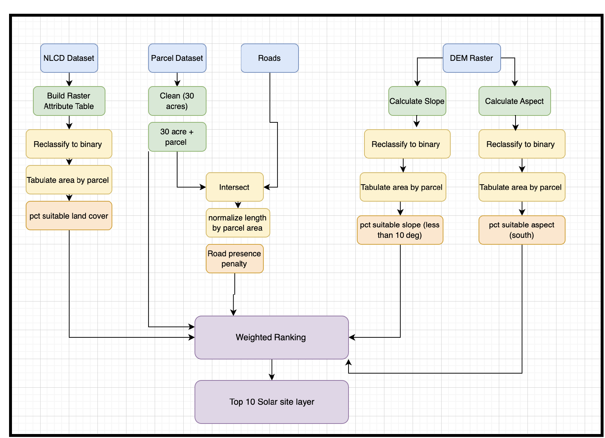
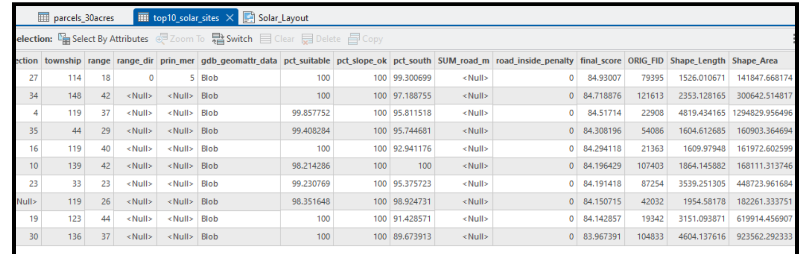

Ranking Minnesota's best sites for utility-scale solar - and being upfront about the ranking's limits.
A weighted GIS model combining land cover, parcel size, slope, aspect, and road proximity into a single suitability score for candidate solar sites statewide, built under a real semester deadline with real unresolved questions about how sound the final ranking actually is.

The goal
Most solar suitability resources I looked at before starting combined only a couple of factors - elevation and aspect, typically. The goal here was to combine more of what actually matters for siting a utility-scale array: available acreage, slope, aspect, land cover, and proximity to roads and transmission infrastructure. I also wanted the whole pipeline automated end to end.
Neither of those fully happened. Transmission line proximity and solar irradiation data were part of the original plan and never made it into the final model - there simply wasn't time. And the land cover reclassification step, which I'd hoped to run entirely in ArcPy, kept failing for reasons I still don't fully understand, so I ended up doing that one step by hand in ArcGIS Pro's interface instead of in code.
The approach
Two hard constraints come first: parcels have to be at least 30 acres, and land cover has to fall into a suitable class (developed open space, shrub/scrub, grassland, pasture, or cultivated crops). Everything that passes both filters gets scored on three weighted factors - percent suitable land cover, percent low-slope area, percent south-facing area - minus a penalty for parcels with a lot of major road running through them.

The actual results
Here's the real output table for the top 10 ranked parcels:

Two things stand out looking at this honestly, rather than just presenting it as a clean top-10 list:
- All ten final scores sit within about one point of each other on a roughly 100-point scale (83.97 to 84.93). That's a tight cluster - tight enough that small changes to the weighting could plausibly reorder who's in the top 10, which is exactly the kind of thing a sensitivity analysis is for.
- Every single one of the top 10 shows a null value for
SUM_road_m, meaning the road-proximity penalty contributed exactly zero to any of these ten scores. That could be a genuine pattern - large rural parcels tend to sit away from TIGER-classified primary and secondary roads - or it could point to a join that silently failed for a subset of parcels. I haven't tracked down which, and I think that's worth saying plainly rather than glossing over.
What I'd actually change
From my own reflection on this project, written right after finishing it:
- Acreage itself isn't in the final ranking. It's used as a hard cutoff (30+ acres) but never as a scored factor - which is a real gap, since larger parcels matter a lot for how much capacity a site can actually support.
- I'm not entirely convinced the final ranking is mathematically sound. I went back and forth a lot on which variables deserved hard constraints versus soft weights, and how much each weight should count. That uncertainty is the direct reason a sensitivity analysis got added to the notebook afterward - testing how much the top-10 list actually depends on the specific weights chosen felt like the honest way to answer that question instead of just asserting the ranking is right.
- The notebook isn't reproducible on another machine as it stands - paths are hardcoded to my own project folder, and the workflow depends on ArcGIS Pro being open with the right project already loaded. Relative paths, a packaged data folder, and more print-statement checkpoints would be the fix.
- Time was the dominant constraint, not skill or interest - this landed during a 19-credit finals week, and the automated multi-page layout with summary statistics that was supposed to accompany the ranked output never got built.
On "is this mathematically sound"
Short answer: not fully validated yet, and I think it's more useful to say that directly than to imply otherwise. The weights (45% land cover, 30% slope, 10% aspect, minus a 15% road penalty) reflect a reasonable but subjective prioritization, not a value derived from literature or a formal method like pairwise AHP comparison. The notebook now includes a sensitivity analysis that tests how much the top-10 result actually depends on that specific choice of weights - the real next step is running it against the actual output and reporting what it finds, rather than presenting one ranking as the final word.